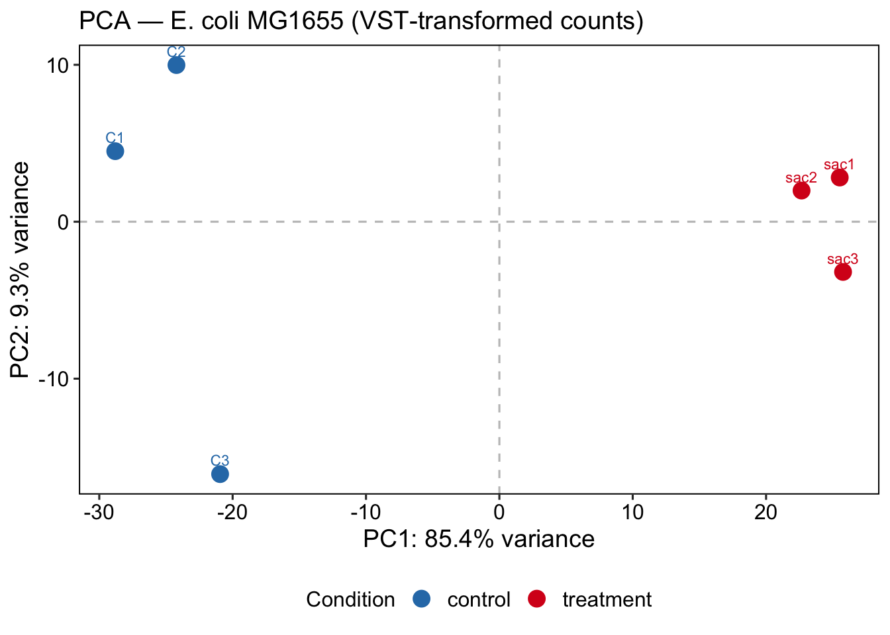

4.9 Principal Component Analysis (PCA)
PCA reduces the high-dimensional expression space (one dimension per gene) to a small number of principal components that capture the largest sources of variance in the data. In a well-controlled experiment, PC1 should separate the two conditions — this confirms that the biological effect of interest is the dominant driver of transcriptional variation.
If PC1 is instead explained by a technical variable (batch, sequencing run, RNA quality), batch correction will be needed before differential expression analysis (Leek et al., 2010).
pca_data <- plotPCA(vsd,
intgroup = c("sample", "condition"),
returnData = TRUE)
pct_var <- round(100 * attr(pca_data, "percentVar"), 1)
PCAPlot <- ggplot(pca_data, aes(x = PC1,
y = PC2,
color = condition,
label = sample)) +
geom_point(size = 4) +
geom_text(vjust = -0.8, size = 3, show.legend = FALSE) +
geom_hline(yintercept = 0, linetype = "dashed", alpha = 0.3) +
geom_vline(xintercept = 0, linetype = "dashed", alpha = 0.3) +
theme_pubr(border = TRUE) +
theme(
axis.text = element_text(size = 12),
axis.title = element_text(size = 14),
legend.text = element_text(size = 12),
legend.position = "bottom"
) +
labs(
x = paste0("PC1: ", pct_var[1], "% variance"),
y = paste0("PC2: ", pct_var[2], "% variance"),
title = "PCA — E. coli MG1655 (VST-transformed counts)",
color = "Condition"
) +
scale_color_manual(values = cols_condition)
PCAPlot
💡 Extra: You can always use plotly!
PC1 capturing 85.4% and separating conditions cleanly is a strong positive signal — the saccharin treatment has a large, consistent transcriptional effect. C3 separating on PC2 is worth noting: it passed normalization QC but shows some residual transcriptional difference from C1/C2. This is within acceptable range for biological replicates, but we need to document it and check if C3 was grown or processed differently.